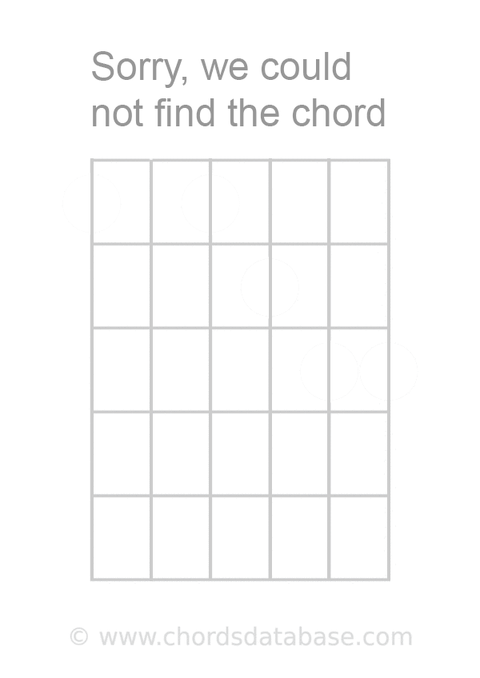

<pre class="chord-content" *ngIf="chord"  [innerHTML]= 'chord | chordify'></pre>
<div class="chord-popup">
  <div class="icon-holder">
    <i class="icon-cross" (click)="hideChord()"></i>
    <div class="arrows">
      <i class="icon-arrow-left" (click)="previousChord()"></i>
      <i class="icon-arrow-right" (click)="nextChord()"></i>
    </div>
  </div>
  <div class="images">
    
  </div> 
</div>